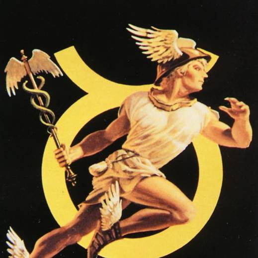

出典：
尼采所爱用的一个术语。尼采所谓的“无名怨愤”（ressentiment）——一个法语单词，指一种特殊的愤恨，即我们为了保护自我形象，为自身遭受的痛苦责怪别人。借用道德谱系的一个比喻：羔羊显然不喜欢被捕食者攻击，但羔羊开始指控捕食者之恶时，就是一种无名怨愤。
然后，发生了让尼采心生恐惧又肃然起敬的事情：无名怨愤变得富有创造力。奴隶阶层的一些僧侣，首先是在古犹太教，然后是在古罗马帝国的基督教，对道德进行了全面的重新解释：主人阶层认为的“善”突然变成了“恶”，而主人阶层认为的“恶”突然变成了“善”。权力和支配的自然流露被认为是恶的，温顺和谦卑被认为是受到祝福的象征。荣誉不再属于胜利者，而属于那些逆来顺受的人。受压迫者和社会中的贵族相比，受到同等甚至更高的重视。每个人都是平等的，而矛盾的是，穷人是伟大的。奴隶的道德反叛源于无名怨愤，是一种想象的复仇，这种复仇中奴隶受挫的权力意志获得了一种自我表达的新价值体系，在这种新的分配下，温顺的人得到承诺，他们将继承大地。
对主人之成功的怨恨，变成了对世俗成功本身的报复。与这一脉相承的歌颂博爱的善恶心理，想象出了一种最终的正义状态——善人，即弱者，上天堂;恶人，即强者，下地狱。换言之，所谓温顺和爱，其实是复仇和支配的巨大胜利，因为奴隶的道德反叛不仅打败了某人或某物，还打败了世俗的失败这一概念本身。
这种反叛在一个想象的天堂中，对那些曾经在地球上幸灾乐祸的人投以心满意足的注视。
金苹果是希腊神话中著名的宝物。金苹果最早出现，是在宙斯和赫拉的婚礼。大地女神盖亚从西海岸带回一棵枝叶茂盛的大树给宙斯和赫拉作为结婚礼物，树上结满了金苹果。宙斯派夜神的三个女儿，称作赫斯珀里得斯，看守栽种金苹果的圣园。另外还有百头巨龙拉冬帮助她们看守。
最重要的一次出现是在人类英雄帕琉斯和海洋女神忒提斯的婚礼上。众神均受邀参加婚礼，唯有不和女神厄里斯没有受到邀请。厄里斯怀恨在心，在婚礼上将一个金苹果呈现给宾客，上面写着“送给最美的女神”。女神中地位最高 、同时也是最美丽的三位女神——赫拉、雅典娜、阿芙罗狄忒为了这个金苹果争执不下，其他神祇害怕得罪女神都不敢发言，天神宙斯让山上牧羊的漂亮小伙子帕里斯做评判。
三位女神为了获得金苹果，分别开出诱人地条件：赫拉他给他无上的权力,并保佑他做一个高高在上的统治者；雅典娜愿意赐给他智慧和力量，鼓励他有勇气去冒险,闯出一条英雄般辉煌的路；阿芙罗狄忒答应让世界上最漂亮的女子爱上他,并做他的妻子。帕里斯想来想去，觉得权力和统治他等以后继承他父亲的王位就可以了，英雄的道路他自己有的是一身好本事大胆去闯，但爱情却不是每天都可以遇到的。于是就将金苹果给了阿芙罗狄忒。后来，帕里斯在阿芙罗狄忒的帮助下拐走了斯巴达的王后——美女海伦，从而成为了特洛伊战争的导火索。
赫尔麦的名字明显来自于希腊神话中的赫尔墨斯。赫尔墨斯是古希腊神话中的商业、旅者、小偷和畜牧之神。也是众神的使者，奥林匹斯十二主神之一，是宙斯与阿特拉斯之女迈亚的儿子，在罗马神话中又称墨丘利。
赫尔墨斯聪明伶俐，机智狡猾，又被视为欺骗之术的创造者。赫尔墨斯往往手持双蛇杖，应该就是赫尔麦蛇眼的来源。

Figure 1. 赫尔墨斯